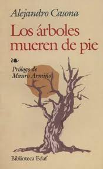

Los árboles mueren de pie – Alejandro Casona
|
Sinópsis: El señor Balboa tenía un nieto desalmado al que, un día, tuvo que echar de casa (cosa que ocultó a su esposa). Desde entonces “Balboa” hacía llegar cartas apócrifas haciéndose pasar por su nieto para que su esposa no se deprimiera. El nieto real decide volver a su hogar (en busca de dinero) pero el barco en el que venía se pierde. Balboa contrata a un imitador, para que finja ser el nieto perdido ante la abuela. Pero..... llega por sorpresa el malvado y verdadero nieto, que no ha muerto como se pensaba. |
 |